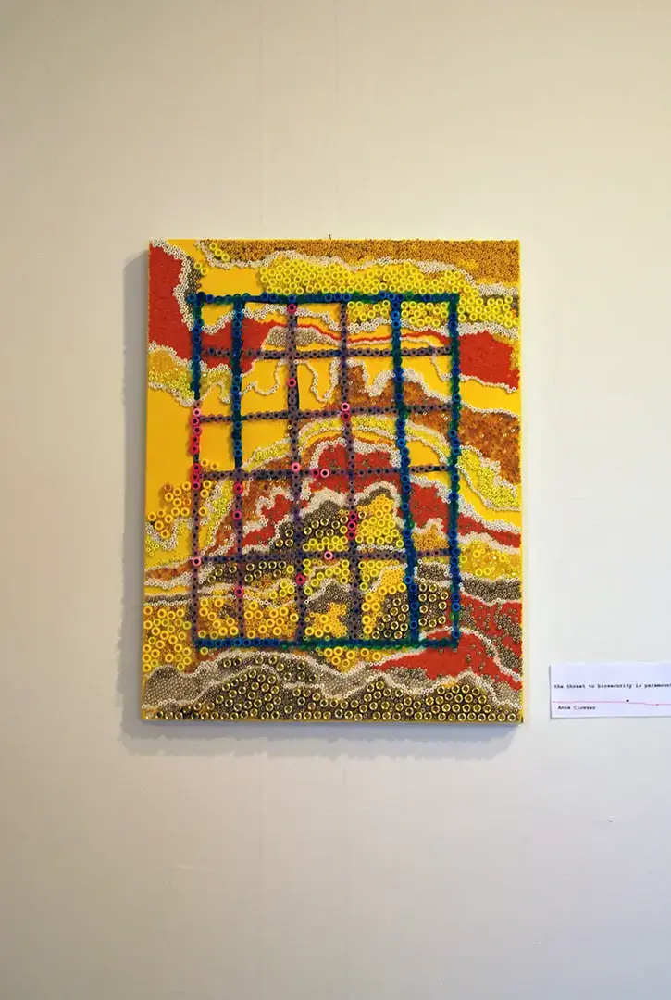
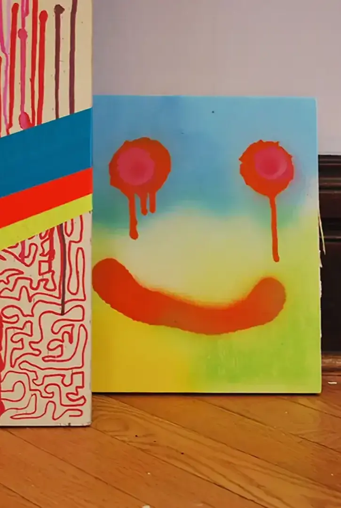

Identity as Anonymity



Public Space One, July 2022
This group show with Nix Slater-Scott, Estevan Cornejo, Anna Clowser, and myself explored anonymous art-making and ways of bringing street art into the gallery space. Three of the artists displayed their work anonymously under the street names JUNK, ToyGun, and King Crow.


Download a printable copy of the zine I made for this show